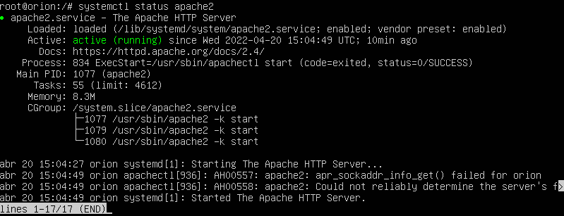
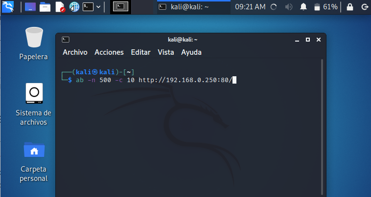
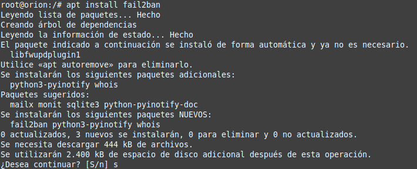
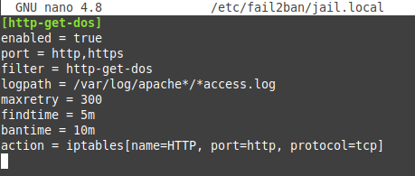
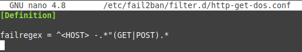
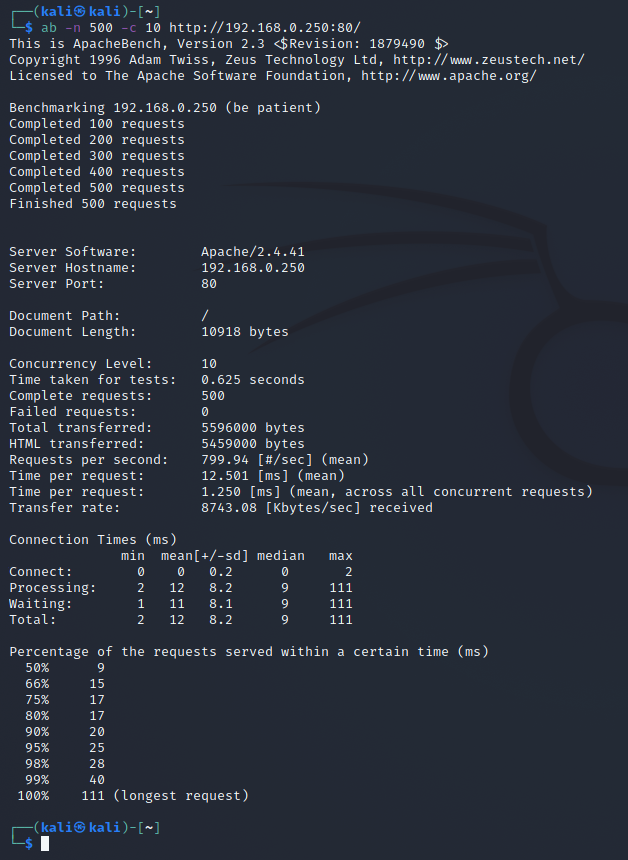
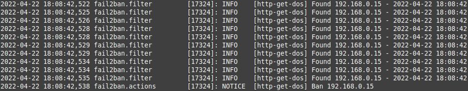
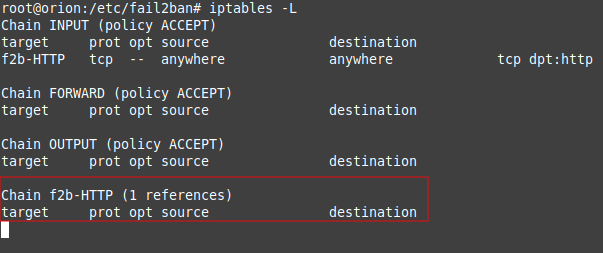
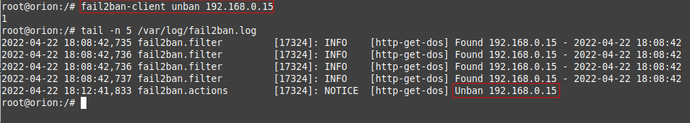
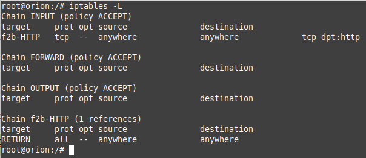

Laboratorio 1. Anti-DDoS con fail2ban
1. Introducción
En este laboratorio, se van a mitigar los ataques de denegación de servicio (DoS) utilizando Fail2Ban.
Los recursos necesarios para realizar el laboratorio son:
- Máquina Ubuntu Server con Apache que hará las veces de equipo objetivo - ip: 192.168.0.250/24.
- Máquina GNU/Linux (kali, ubuntu, etcétera) que hará las veces de atacante- ip: 192.168.0.15/24.
|  |  |
| Figura 1. Ubuntu Server 20.04.3 con apache instalado (objetivo). | Figura 2. Equipo Kali Linux (atacante). |
{kind=link}
{kind=link}
En la siguiente figura se puede observar el esquema de red.
{kind=link}
Figura 3. Esquema de red.
2. Instalación y configuración de fail2ban
Para instalar fail2ban, el comando es el siguiente:
root@orion:/#apt install fail2ban

Figura 4. Instalación de fail2ban.
Una vez instalado fail2ban, se habrán creado los archivos de configuración en la ruta /etc/fail2ban. En este directorio hay que crear ciertos archivos.
1. Crear fichero de configuración jail.conf
root@orion:/#nano /etc/fail2ban/jail.local
Hay que añadir las siguientes líneas:
[http-get-dos]
enabled = true
port = http,https
filter = http-get-dos
logpath = /var/log/apache*/*access.log
maxretry = 300
findtime = 5m
bantime = 10m
action = iptables[name=HTTP, port=http, protocol=tcp]

Figura 5. Fichero jail.conf.
donde,
- enabled es donde se indica que la regla esté activada.
- port es donde se define el tipo de puertos a los que afectará, para este caso, en aquellos puertos que usen tráfico http o https.
- filter se indica el filtro que se utilizará para detectar las peticiones incorrectas.
- logpath se define el archivo de logs que se observará y filtrará por peticiones.
- bantime es el tiempo que un host será bloqueado del servidor en caso de baneo. En este caso 10 minutos.
- maxretry es el número de intentos fallidos realizados por una IP para que sea baneada. En este caso 5 intentos.
- findtime es el tiempo en el que deben ocurrir las peticiones especificadas en maxretry para que la IP sea baneada. En este caso 5 minutos.
- action son las acciones que se van a realizar una vez se cumplan el resto de las pautas. En este caso, se bloqueará el acceso a la IP por iptables.
2. Crear fichero de filtro
A continuación, hay que crear el archivo al que hace referencia el filtro que se acaba de crear. Los filtros se encuentran en la siguiente ruta /etc/fail2ban/filter.d/
Para proceder a crear un nuevo filtro, se abre un archivo con un editor de texto en la ruta filter.d.
root@orion:/#nano /etc/fail2ban/filter.d/http-get-dos.conf
Hay que añadir las siguientes líneas:
[Definition]
failregex = ^<HOST> -.*"(GET|POST).*
donde con la opción failregex, se filtran todas las peticiones GET y POST que se realicen, es decir, se contabilizarán todas.

Figura 6. Fichero http-get-dos.conf.
Una vez guardado el archivo, hay que reiniciar fail2ban.
3. Testeo del servicio web
Con lo realizado en el apartado 2, ya se tendrá el servicio web protegido. A continuación, se va a testear y la mejor manera es utilizar apache benchmark.
Para ello, desde otra máquina a Linux (donde se tenga instalado el paquete apache2-utils) hay que escribir el siguiente comando, el cual, realizará 500 peticiones desde 10 conexiones distintas:
┌──(kali㉿kali)-[~]
└─$ab -n 500 -c 10 http://192.168.0.250:80/
donde la ip 192.168.0.250 es la ip del ubuntu server con el servidor web y fail2ban.

Figura 7. Ataque desde una máquina externa.
Comprobación de los logs
Ahora, se podría comprobar desde el log de fail2ban, encontrado en /var/log/fail2ban.log que la IP desde la que se han realizado las pruebas ha sido baneada, impidiendo de esta forma los ataques.
root@orion:/#cat /var/log/fail2ban.log

Figura 8. Consulta del log de fail2ban.
También, se puede comprobar la regla configurada en iptables con el siguiente comando, donde se verá que la IP ha sido bloqueada.
root@orion:/#iptables -L

Figura 9. Consulta de iptables.
Falsos positivos
Si por alguna razón, fail2ban ha detectado un falso positivo y banea una dirección IP legítima, se puede desbanear la misma, para ello, hay que usar el siguiente comando:
root@orion:/#fail2ban-client unban 192.168.0.15
donde 192.168.0.15 es la ip del equipo baneado.
Para consultar que se ha desbaneado la ip, se consulta el log:
root@orion:/#cat /var/log/fail2ban.log

Figura 10. Desbanear ip y consulta del log de fail2ban.
Si se vuelve a consultar la configuración de iptables se puede observar que la regla anterior ya no existe::
root@orion:/#iptables -L

Figura 11. Consulta de iptables.
Obra publicada con Licencia Creative Commons Reconocimiento No comercial Compartir igual 4.0